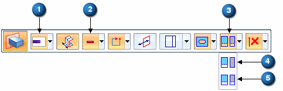

Multi-body cutouts
In multi-body modeling, you can control how a cutout feature interacts with the design bodies it intersects.

|
(1, 2) |
The Apply Cut Features option is only available when the Extrude options are set to: Extent=Finite (1) and Add/Cut=Cut (2). |
|
(3) |
Use the Apply Cut Features option on the Extrude command bar. |
|
(4) |
The Cut Active Body option only cuts the active design body. |
|
(5) |
The Cut Selected Bodies option cuts all bodies that are intersected by the cut. All intersected bodies highlight in green. You can deselect an intersected body by pressing the Ctrl key while selecting the design body. |
When the model contains multi-bodies, the Body Selection option is available on Ordered Cut, Revolved Cut, and Hole commands. In synchronous, the option is available when you perform a linear or revolved cut operation.
For linear cuts, all Extent types are valid except Through Next.
When patterning or mirroring a cut feature that passes through multi-bodies, the pattern maintains the multi-body selections.
How do I
Add a bodyToggle a solid body type
Rename a design or construction body
Learn more
Multi-body modelingSheet metal design bodies
Multi-bodies in PathFinder
Look up more details
Add Body commandAdd Body dialog box
Activate Part Body command
Activate Assembly Body command
Toggle Design/Construction Body command
Show Body Features command
Show Body Name command
Show All Design Body command
Hide All Design Body command
Show All Ordered Body command
Hide All Ordered Body command